A 3D animated short, 2025, remade in 2026
Side Dish
When the videos we eat with become the meal
In Chinese, dianzi zhacai, “electronic pickles”, are the videos people put on while they eat, the way a salty pickle goes with plain rice. Here the pickle has become the meal: six faceless diners in suits eat circuit boards with knife and fork, one mouthful after another, while a wall of screens plays someone else’s feast.
- Year
- 2025, June; remade in October 2026
- Role
- Individual course work: the scene, the diners' suits, the animation and the camera; the remake of 2026
- Course
- 3D Animation, taught by Zhejun Liu · College of Design and Innovation, Tongji University
- Status
- Course submission, June 2025 · remade for this page, October 2026
The shot, in six moments
01The dinner
Every part of a meal, swapped for something electronic.
The film is one image, a dinner. I kept its order, the table, the plates, the knife and fork, the guests in suits, and replaced what is eaten. The videos that should keep a meal company are now the meal, and nothing of eating is left but the motion.
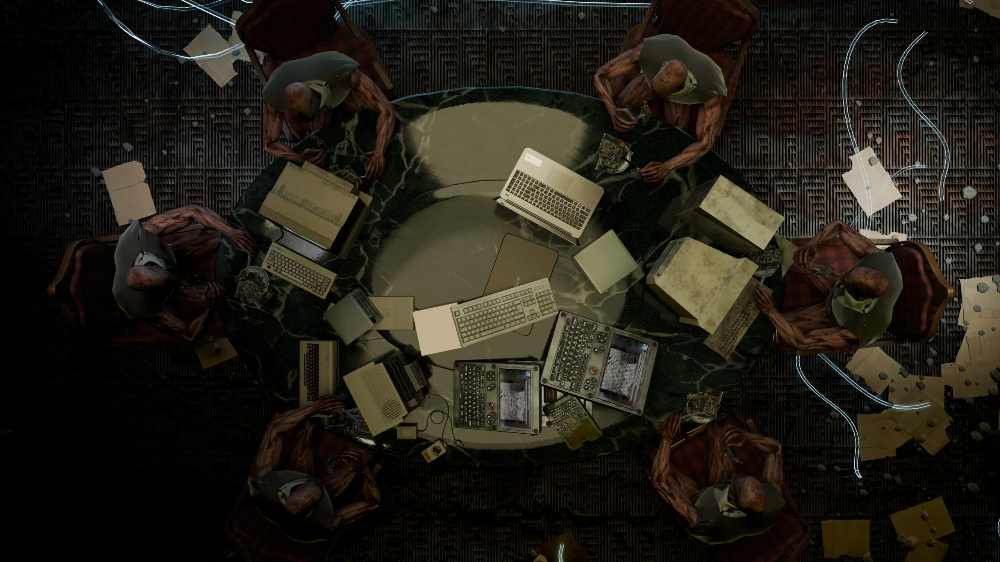
- At a dinnerHereWhat it stands for
- The foodMotherboards and chips on antique platesInformation itself, as what we live on
- The dishesMonitors, keyboards and laptops crowding the tableMore devices than anyone can use, served up
- The mannersA carved marble table, old chairs, a knife and forkConsumption dressed up as something formal and decent
- The guestsSix bald figures in suits, without faces, all the samePeople who have lost their faces and their differences
- Their clothesSuits torn at the shoulders, arms that do not look humanDecorum that no longer holds the appetite in
- The side dishA wall of screens playing the feast of Next FloorElectronic pickles taken literally: eating while watching others eat
- The roomAn abandoned warehouse, cables running over the floor like waterThe digital flood, drawn as a flood they sit in
- The rhythmSix diners in step, at one and a half times speed, without endEating that means nothing and repeats, like scrolling a feed
02Where it comes from
Next Floor: the same dinner that will not stop, with something else on the plate.
I found Next Floor on YouTube. Three things stayed with me: the guests keep up appearances, nothing outside the table reaches them, and what they eat is cult. My film keeps the dinner and the indifference, and changes the plate.
Next Floor Denis Villeneuve, Canada, 2008, 11 minutes and almost without words. It premiered at Cannes Critics’ Week in May 2008 and won its Canal+ prize for best short film. At a lavish banquet, waiters and valets serve eleven pampered guests raw meats; the floor gives way, the table crashes down to the floor below, and the meal goes on.
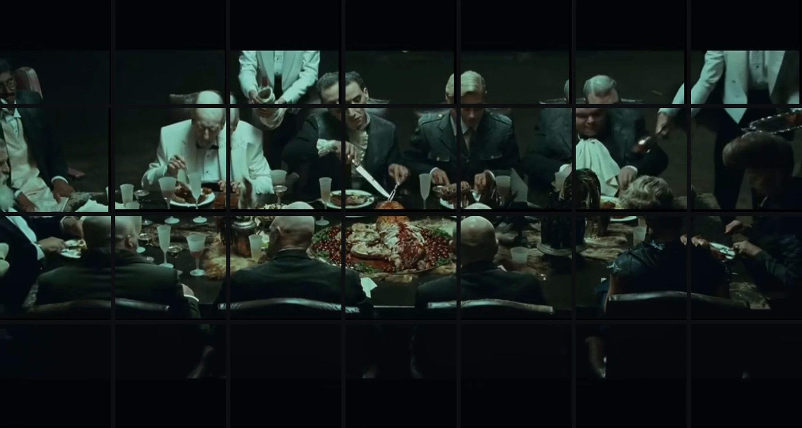
- Next FloorSide Dish
- Who eatsEleven guests in evening dressSix faceless copies of one diner
- What is eatenRaw meat, offal, gameMotherboards, chips, monitors
- Who servesWaiters and valetsA wall of screens that never stops playing
- The disasterThe floor gives way, again and againA flood of cables; at the end the room falls away behind the diner
- And thenThey fall, dust themselves off and eatThey eat faster, in step, without end
03The references
Dinners where eating takes the person over.
Besides Next Floor, two films, three books and three paintings were on my desk. The films and the paintings gave the dinner its shape; the books gave the thought that what we take in through screens is a kind of eating.
Films
- Spirited AwayHayao Miyazaki, 2001Chihiro’s parents eat a meal laid out for the spirits and turn into pigs: appetite takes the human shape away.
- The Cook, the Thief, His Wife & Her LoverPeter Greenaway, 1989Almost all of it happens in one restaurant: night after night of excess at the same long table.
Books
- The Information DietClay A. Johnson, 2012Treats what we take in from the media as food, and argues for a diet: the comparison my title takes literally.
- The Expulsion of the OtherByung-Chul Han, 2016On a world filling up with the same while the other disappears: six diners who are one.
- The Society of the SpectacleGuy Debord, 1967On life lived through images: the screen wall, a dinner watched at a dinner.
Paintings
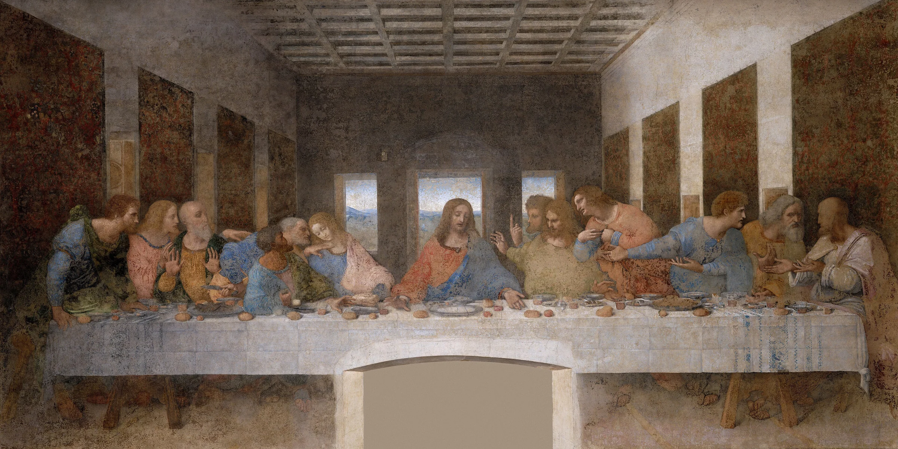
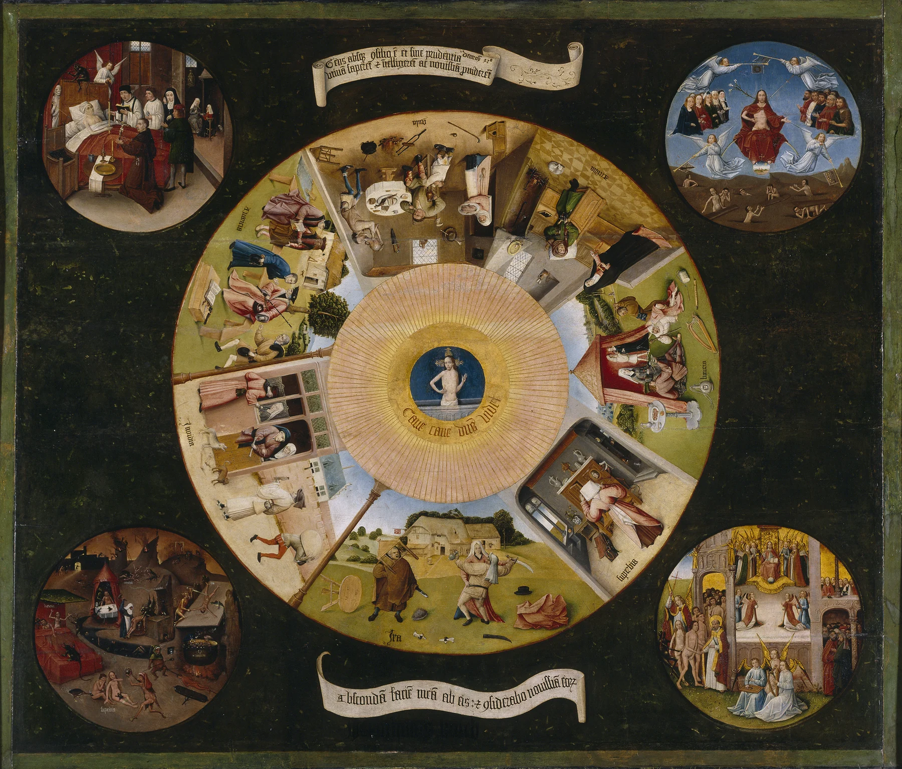
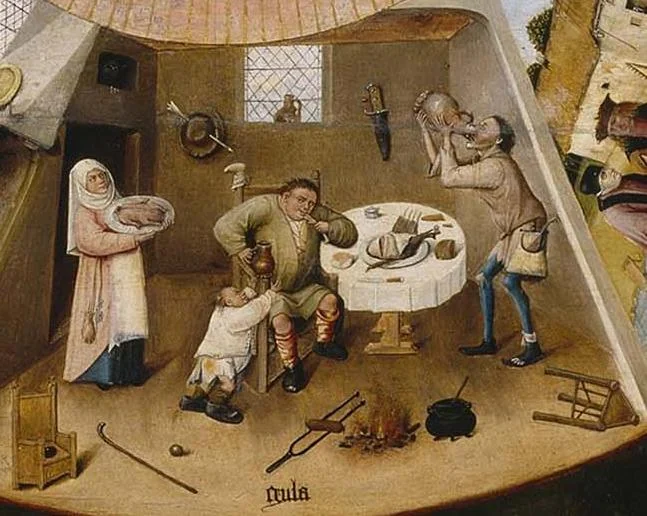
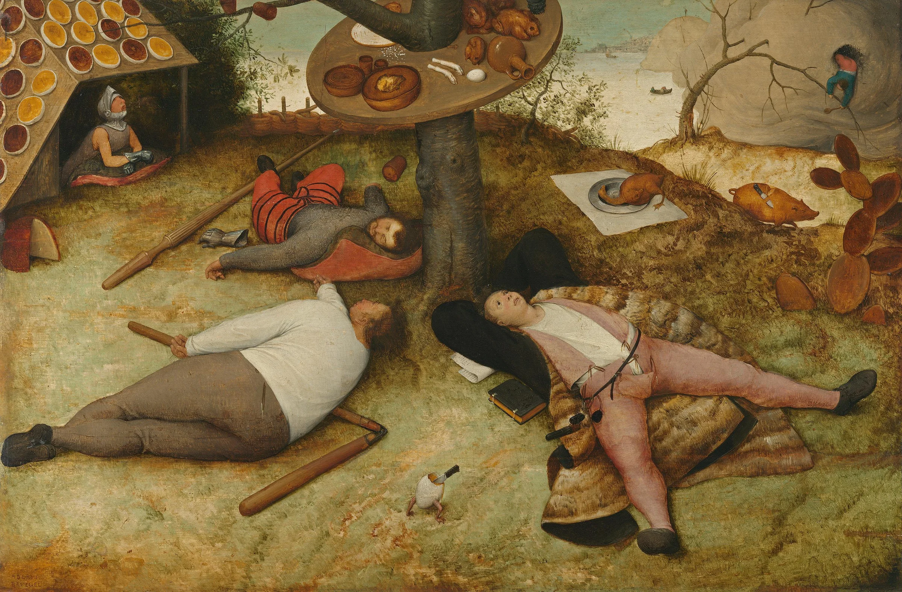
The paintings are reproductions of public-domain works, from Wikimedia Commons.
04The diners
Six diners, one body.
They are one character, copied: the same bald figure without a face, the same torn suit, the same animation, so all six lift their forks at the same moment. In the remake each mouthful reaches the face: the head leans in, bites, tears and chews, and the next mouthful comes before the last is down.
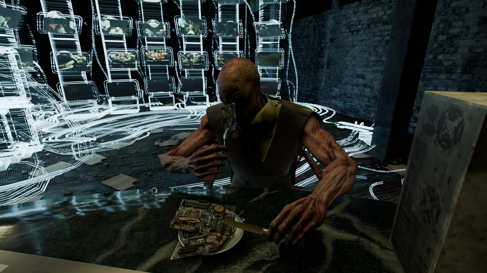
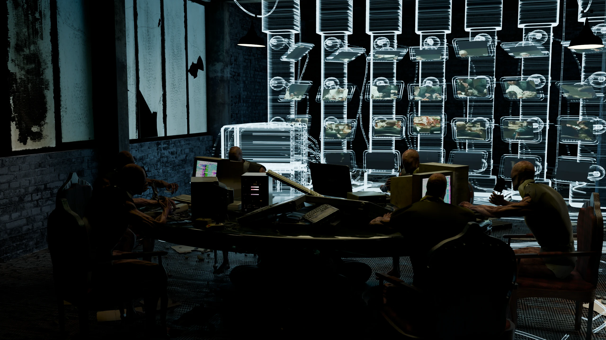
05The remake
From the window to the plate.
The course asked for a set template: a wall with one window, a camera rising past it, about ten seconds. My diners sat with their backs to it and the eating could not be seen. A year later I rebuilt the shot: the camera starts at the same window, crosses it, circles the table and ends at a plate, so the viewer becomes the next guest.
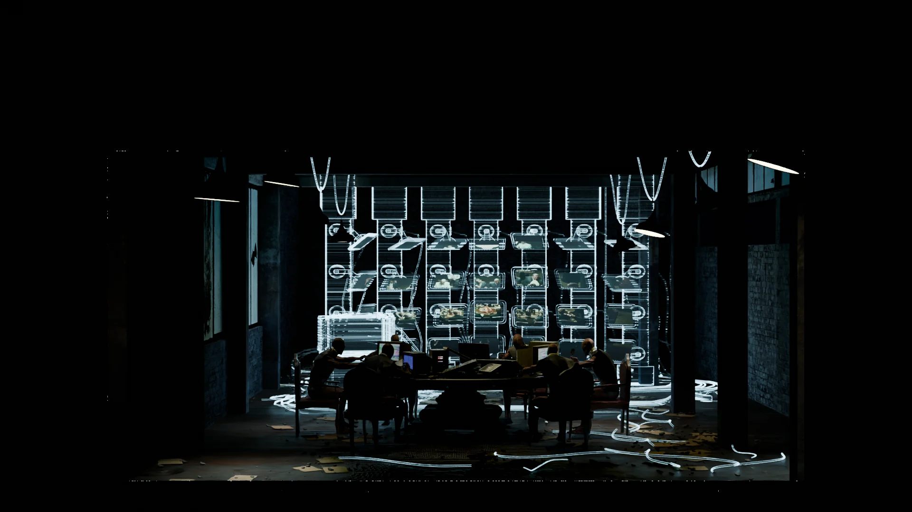
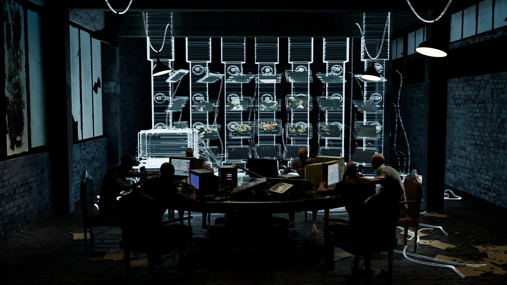
- 10:00Outside, where the course version stood
- 20:05Through the window
- 30:08Inside the warehouse
- 40:14Round to the right of the table
- 50:18The dolly zoom begins, at 35 mm
- 60:21At the plate, 17 mm, and a hold
- One shotTwenty-five seconds on a fixed 35 mm lens, so the only zoom is the last one.
- The dolly zoomThe camera moves from 1.19 m to 0.58 m from the diner while the lens widens from 35 to 17 mm: he keeps his size and the room falls away behind him, as the floor falls away in Next Floor. The shutter stays open longer while it is fastest, and the room blurs.
- The eatingOne and a half times speed, looped over the part of the clip where knife and fork stay in the hands, with a bite added to every mouthful.
- The platesA heap of circuit boards on every plate, so what is eaten can be seen.
- The soundThe course film’s own sound, stretched to 25 s and placed at the two ends of the screen wall: muffled while the camera is outside, opening as it crosses the window.
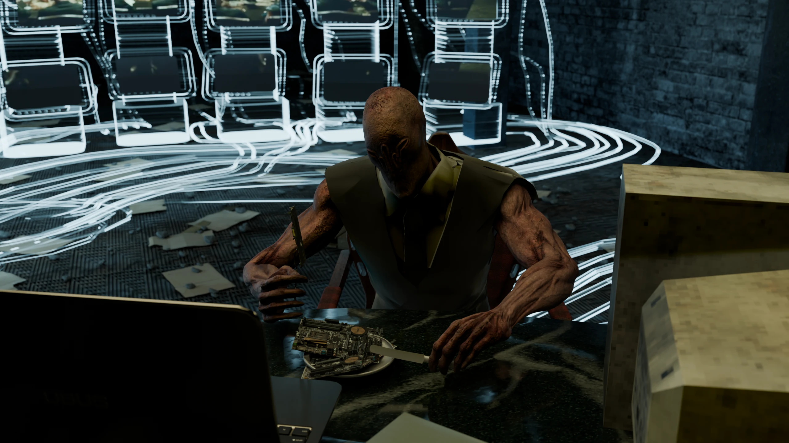
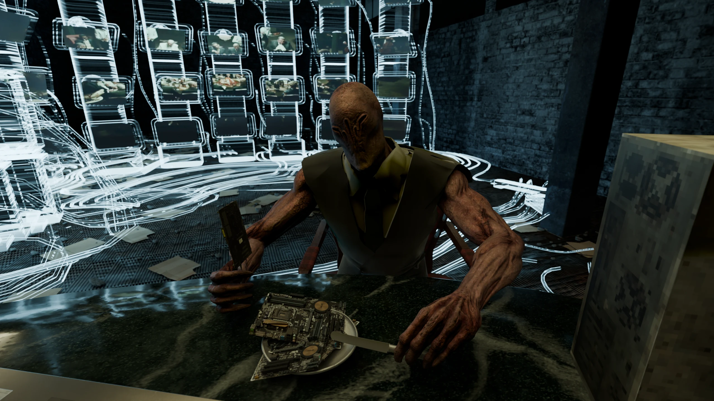
What this record can't say
- The film on this page is a remake, made in October 2026, more than a year after the course: a new camera, a faster and looped eating motion with a bite on every mouthful, new suit materials, circuit boards on the plates and a spatial mix of the sound. The course version of 2025 is 12.5 s and shows the room through the template's window.
- Apart from the suits, which I modelled, the models are downloaded and adapted. The credits list the ones I could trace to the final scene.
- The screen wall plays clips from Next Floor (Denis Villeneuve, 2008). They are not mine, and this page claims no rights to them.
- The six diners are one character with one animation, copied six times; they eat in step on purpose.
- Nothing is on record about how the course version was received.
AI use
The course version of 2025 was made by hand, without AI; many of its models were found online, and they are credited below. The 2026 remake was made with an AI coding assistant, Claude Code, which ran Blender from scripts at my direction: cleaning the project file, the new camera and the dolly zoom, looping the motion capture and adding the bite, the suit materials, and the spatial mix of the sound. The text of this page was drafted with the same assistant from my course statement and my answers.
Details
- Title
- Side Dish. A 3D animated short, 25 s: faceless diners eat circuit boards with knife and fork while a wall of screens plays another feast.
- Medium
- 3D animation, 25 s, 1920 × 1080, one shot, stereo sound placed in the room · the course version of 2025, 12.5 s
- Skills
- Scene assembly · modelling the suits · camera and light · motion clean-up · spatial sound
- Tools
- Blender (Cycles) · Mixamo · Python scripts that ran Blender for the remake
Models from Sketchfab, adapted: Abandoned Warehouse – Interior Scene by Aurélien Martel; Asus Z170-P Motherboard by Lassi Kaukonen; Wooden Table/Chair by kEam; Dining Tools by Mikhail Kadilnikov; all CC BY 4.0. Iron Age Plate, Castilla-La Mancha, Spain by Global Digital Heritage and GDH-Afrika, CC BY-NC 4.0. Under the Sketchfab Standard licence: Ornamental Wooden Dining Table with Marble Top by Lília Mara; Laptop (FREE) by Brandon Westlake; Portable Terminal FREE by TwilightFox; PSX Dirty Old PC by Charckes; Old Computer V2 by SketchyBot; Surveillance room by wa_rouk. The diners: a Mixamo character and animation (Adobe), in suits I modelled myself. The metal floor: MetalPlates013 from ambientCG, CC0. The screens play clips from Next Floor (Denis Villeneuve, 2008); this page claims no rights to them. The stills are rendered from the film's own scene and frames for this page, sharper than the film; the course frame is the course version's own. The three paintings are reproductions of public-domain works from Wikimedia Commons.